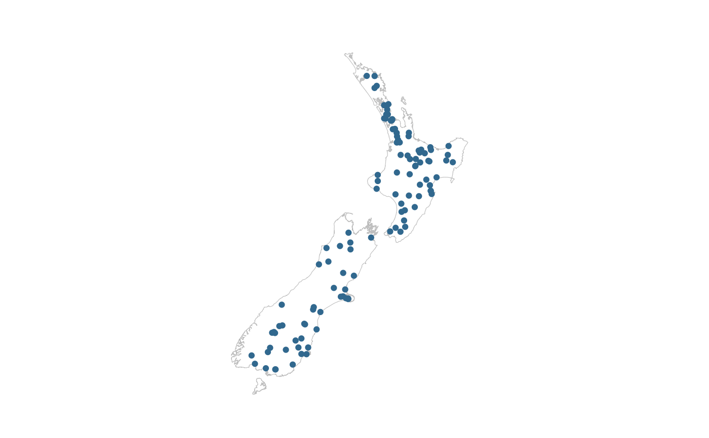

Map of simple features in ggplot that is not coloured and not facetted.
gg_sf( data, text_var = NULL, size_point = 1, size_line = 0.5, alpha = NULL, pal = pal_viridis_reorder(1), borders = NULL, borders_on_top = NULL, borders_pal = "#7F7F7F", borders_size = 0.2, title = NULL, title_wrap = 80, subtitle = NULL, subtitle_wrap = 80, caption = NULL, caption_wrap = 80, theme = NULL, mobile = FALSE )
| data | A sf object with defined coordinate reference system. Required input. |
|---|---|
| text_var | Unquoted variable to be used as a customised tooltip in combination with plotly::ggplotly(plot, tooltip = "text"). Defaults to NULL. |
| size_point | Size of points. Defaults to 0.5. |
| size_line | Size of lines. Defaults to 0.5. |
| alpha | The opacity of features. Defaults to 1 for points/lines, or 0.5 for polygons. |
| pal | Character vector of hex codes. |
| borders | A sf object as administrative boundaries (or coastlines). Defaults to no boundaries added. The rnaturalearth package is a useful source of country and state boundaries. |
| borders_on_top | TRUE or FALSE as to whether the borders are on top of the sf object supplied to the data argument. Defaults to TRUE for points and lines, but FALSE for polygons.. |
| borders_pal | Colour of the borders. Defaults to "#7F7F7F". |
| borders_size | Size of the borders. Defaults to 0.2. |
| title | Title string. |
| title_wrap | Number of characters to wrap the title to. Defaults to 75. |
| subtitle | Subtitle string. |
| subtitle_wrap | Number of characters to wrap the subtitle to. Defaults to 100. Not applicable where mobile equals TRUE. |
| caption | Caption title string. |
| caption_wrap | Number of characters to wrap the caption to. Defaults to 80. |
| theme | A ggplot2 theme. |
| mobile | Whether the plot is to be displayed on a mobile device. Defaults to FALSE. |
A ggplot object.
gg_sf(example_sf_point, borders = example_sf_borders)